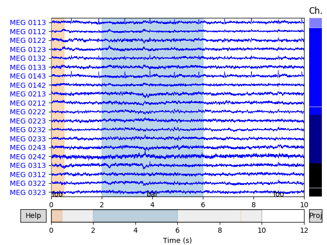

Note
Click here to download the full example code
The Events and Annotations data structures¶
Events and annotations are quite similar. This tutorial highlights their differences and similarities, and tries to shed some light on which one is preferred to use in different situations when using MNE.
Both events and Annotations can be seen as triplets
where the first element answers to when something happens and the last
element refers to what it is.
The main difference is that events represent the onset in samples taking into
account the first sample value
(raw.first_samp), and the description is
an integer value.
In contrast, Annotations represents the
onset in seconds (relative to the reference orig_time),
and the description is an arbitrary string.
There is no correspondence between the second element of events and
Annotations.
For events, the second element corresponds to the previous value on the
stimulus channel from which events are extracted. In practice, the second
element is therefore in most cases zero.
The second element of Annotations is a float
indicating its duration in seconds.
See Reading an event file
for a complete example of how to read, select, and visualize events;
and Rejecting bad data (channels and segments) to
learn how Annotations are used to mark bad segments
of data.
An example of events and annotations¶
The following example shows the recorded events in sample_audvis_raw.fif and marks bad segments due to eye blinks.
import os.path as op
import numpy as np
import mne
# Load the data
data_path = mne.datasets.sample.data_path()
fname = op.join(data_path, 'MEG', 'sample', 'sample_audvis_raw.fif')
raw = mne.io.read_raw_fif(fname)
Out:
Opening raw data file /home/circleci/mne_data/MNE-sample-data/MEG/sample/sample_audvis_raw.fif...
Read a total of 3 projection items:
PCA-v1 (1 x 102) idle
PCA-v2 (1 x 102) idle
PCA-v3 (1 x 102) idle
Range : 25800 ... 192599 = 42.956 ... 320.670 secs
Ready.
Current compensation grade : 0
First we’ll create and plot events associated with the experimental paradigm:
# extract the events array from the stim channel
events = mne.find_events(raw)
# Specify event_id dictionary based on the meaning of experimental triggers
event_id = {'Auditory/Left': 1, 'Auditory/Right': 2,
'Visual/Left': 3, 'Visual/Right': 4,
'smiley': 5, 'button': 32}
color = {1: 'green', 2: 'yellow', 3: 'red', 4: 'c', 5: 'black', 32: 'blue'}
mne.viz.plot_events(events, raw.info['sfreq'], raw.first_samp, color=color,
event_id=event_id)
Out:
320 events found
Event IDs: [ 1 2 3 4 5 32]
Next, we’re going to detect eye blinks and turn them into
Annotations:
# find blinks
annotated_blink_raw = raw.copy()
eog_events = mne.preprocessing.find_eog_events(raw)
n_blinks = len(eog_events)
# Turn blink events into Annotations of 0.5 seconds duration,
# each centered on the blink event:
onset = eog_events[:, 0] / raw.info['sfreq'] - 0.25
duration = np.repeat(0.5, n_blinks)
description = ['bad blink'] * n_blinks
annot = mne.Annotations(onset, duration, description,
orig_time=raw.info['meas_date'])
annotated_blink_raw.set_annotations(annot)
# plot the annotated raw
annotated_blink_raw.plot()
Out:
EOG channel index for this subject is: [375]
Filtering the data to remove DC offset to help distinguish blinks from saccades
Setting up band-pass filter from 2 - 45 Hz
Filter length of 8192 samples (13.639 sec) selected
Setting up band-pass filter from 1 - 10 Hz
Filter length of 8192 samples (13.639 sec) selected
Now detecting blinks and generating corresponding events
Number of EOG events detected : 46
Add annotations to raw objects¶
An important element of Annotations is
orig_time which is the time reference for the onset.
It is key to understand that when calling
raw.set_annotations, given
annotations are copied and transformed so that
raw.annotations.orig_time
matches the recording time of the raw object.
Refer to the documentation of Annotations to see
the expected behavior depending on meas_date and orig_time.
Where meas_date is the recording time stored in
Info.
You can find more information about Info in
The Info data structure.
We’ll now manipulate some simulated annotations.
The first annotations has orig_time set to None while the
second is set to a chosen POSIX timestamp for illustration purposes.
Note that both annotations have different onset values.
# Create an annotation object with orig_time undefined (default)
annot_none = mne.Annotations(onset=[0, 2, 9], duration=[0.5, 4, 0],
description=['foo', 'bar', 'foo'],
orig_time=None)
print(annot_none)
# Create an annotation object with orig_time
orig_time = '2002-12-03 19:01:31.676071'
annot_orig = mne.Annotations(onset=[22, 24, 31], duration=[0.5, 4, 0],
description=['foo', 'bar', 'foo'],
orig_time=orig_time)
print(annot_orig)
Out:
<Annotations | 3 segments : foo (2), bar (1), orig_time : None>
<Annotations | 3 segments : foo (2), bar (1), orig_time : 2002-12-03 19:01:31.676071>
Now we create two raw objects and set each with different annotations. Then we plot both raw objects to compare the annotations.
# Create two cropped copies of raw with the two previous annotations
raw_a = raw.copy().crop(tmax=12).set_annotations(annot_none)
raw_b = raw.copy().crop(tmax=12).set_annotations(annot_orig)
# Plot the raw objects
raw_a.plot()
raw_b.plot()

- 
Note that although the onset values of both annotations were different,
due to complementary orig_time they are now identical. This is because
the first one (annot_none), once set in raw, adopted its orig_time.
The second one (annot_orig) already had an orig_time, so its
orig_time was changed to match the onset time of the raw. Changing an
already defined orig_time of annotations caused its onset to be
recalibrated with respect to the new orig_time. As a result both
annotations have now identical onset and identical orig_time:
# Show the annotations in the raw objects
print(raw_a.annotations)
print(raw_b.annotations)
# Show that the onsets are the same
np.set_printoptions(precision=6)
print(raw_a.annotations.onset)
print(raw_b.annotations.onset)
Out:
<Annotations | 3 segments : foo (2), bar (1), orig_time : 2002-12-03 19:01:10.720100>
<Annotations | 3 segments : foo (2), bar (1), orig_time : 2002-12-03 19:01:10.720100>
[42.955971 44.955971 51.955971]
[42.955971 44.955971 51.955971]
Notice again that for the case where orig_time is None,
it is assumed that the orig_time is the time of the first sample of data.
raw_delta = (1 / raw.info['sfreq'])
print('raw.first_sample is {}'.format(raw.first_samp * raw_delta))
print('annot_none.onset[0] is {}'.format(annot_none.onset[0]))
print('raw_a.annotations.onset[0] is {}'.format(raw_a.annotations.onset[0]))
Out:
raw.first_sample is 42.95597082905339
annot_none.onset[0] is 0.0
raw_a.annotations.onset[0] is 42.955970883369446
Valid operations in mne.Annotations¶
Concatenate¶
It is possible to concatenate two annotations with the + operator (just like
lists) if both share the same orig_time
annot = mne.Annotations(onset=[10], duration=[0.5],
description=['foobar'],
orig_time=orig_time)
annot = annot_orig + annot # concatenation
print(annot)
Out:
<Annotations | 4 segments : foobar (1), foo (2), bar (1), orig_time : 2002-12-03 19:01:31.676071>
Iterating, Indexing and Slicing mne.Annotations¶
Annotations supports iterating, indexing and slicing.
Iterating over Annotations and indexing with an integer returns
a dictionary. While slicing returns a new Annotations instance.
See the following examples and usages:
# difference between indexing and slicing a single element
print(annot[0]) # indexing
print(annot[:1]) # slicing
Out:
OrderedDict([('onset', 10.0), ('duration', 0.5), ('description', 'foobar'), ('orig_time', 1038942091.676071)])
<Annotations | 1 segment : foobar (1), orig_time : 2002-12-03 19:01:31.676071>
How about iterations?
for key, val in annot[0].items(): # iterate on one element which is dictionary
print(key, val)
Out:
onset 10.0
duration 0.5
description foobar
orig_time 1038942091.676071
for idx, my_annot in enumerate(annot): # iterate on the Annotations object
print('annot #{0}: onset={1}'.format(idx, my_annot['onset']))
print('annot #{0}: duration={1}'.format(idx, my_annot['duration']))
print('annot #{0}: description={1}'.format(idx, my_annot['description']))
Out:
annot #0: onset=10.0
annot #0: duration=0.5
annot #0: description=foobar
annot #1: onset=22.0
annot #1: duration=0.5
annot #1: description=foo
annot #2: onset=24.0
annot #2: duration=4.0
annot #2: description=bar
annot #3: onset=31.0
annot #3: duration=0.0
annot #3: description=foo
for idx, my_annot in enumerate(annot[:1]):
for key, val in my_annot.items():
print('annot #{0}: {1} = {2}'.format(idx, key, val))
Out:
annot #0: onset = 10.0
annot #0: duration = 0.5
annot #0: description = foobar
annot #0: orig_time = 1038942091.676071
Iterating, indexing and slicing return a copy. This has implications like the fact that changes are not kept.
# this change is not kept
annot[0]['onset'] = 42
print(annot[0])
# this change is kept
annot.onset[0] = 42
print(annot[0])
Out:
OrderedDict([('onset', 10.0), ('duration', 0.5), ('description', 'foobar'), ('orig_time', 1038942091.676071)])
OrderedDict([('onset', 42.0), ('duration', 0.5), ('description', 'foobar'), ('orig_time', 1038942091.676071)])
Save¶
Note that you can also save annotations to disk in FIF format:
>>> annot.save('my-annot.fif')
Or as CSV with onsets in (absolute) ISO timestamps:
>>> annot.save('my-annot.csv')
Or in plain text with onsets relative to orig_time:
>>> annot.save('my-annot.txt')
Total running time of the script: ( 0 minutes 10.088 seconds)
Estimated memory usage: 8 MB